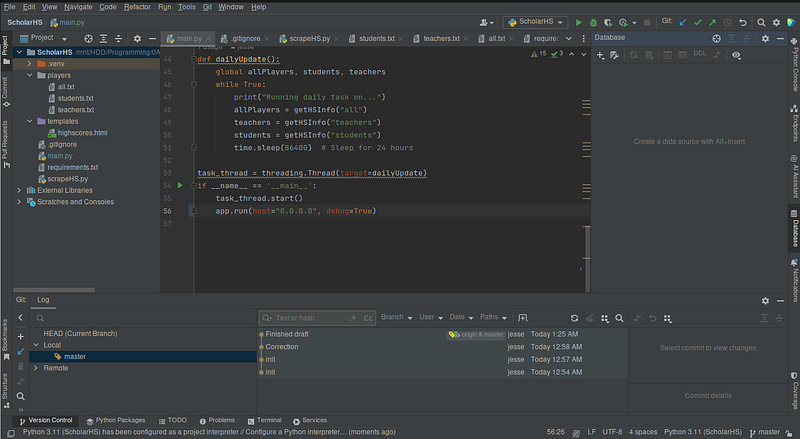
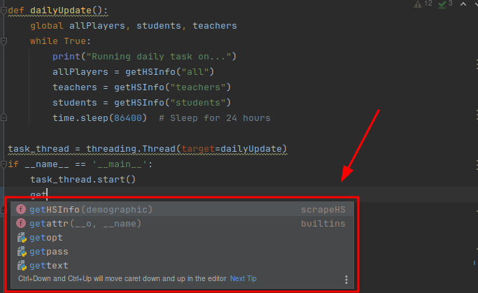
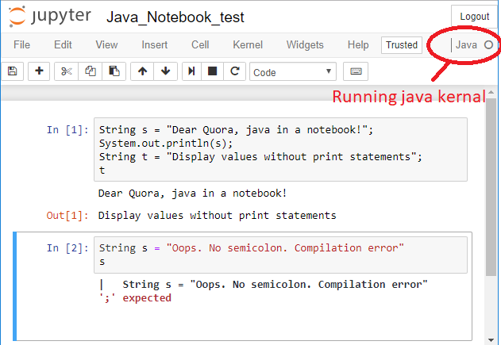
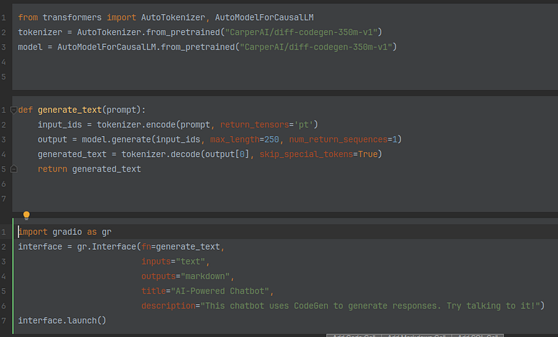
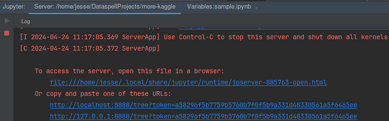
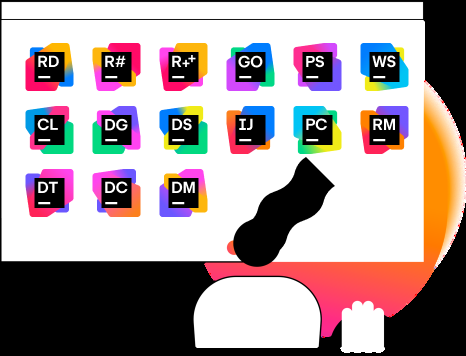
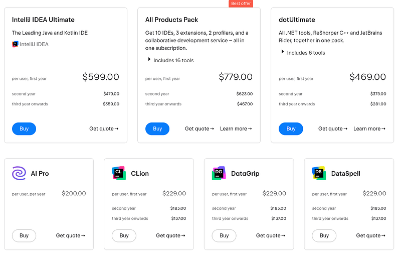
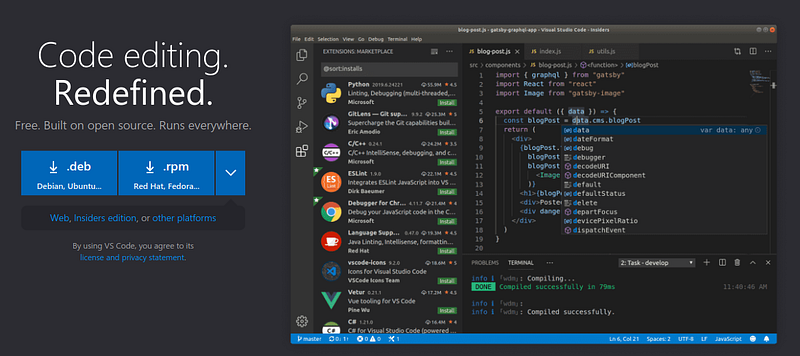
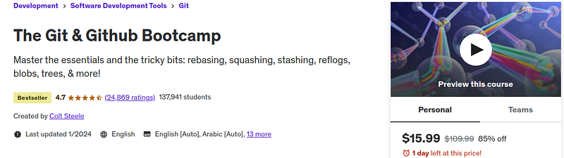
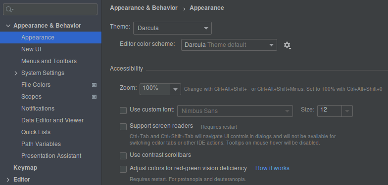

Programmers use many tools and software to create one small Hello World.
A compiler, command line, the language, the language server, the operating system, the print library and more.
The more complex an application becomes the more we use tools and software.
An IDE puts all these tools in one place and produces a workflow.
Why do we use an IDE?
An IDE is meant to speed up a workflow. This means if you write Java code with Git and Maven, you get a GUI for both, close together and in one window. You can easily switch from Maven to Git working between them in an easy flow.
Programmers use an IDE to easily use all the complex tools into one editor.
What are the components of an IDE?
Each language comes with its own tools and required software. So each editor caters to that in its GUI.
JetBrains
They are things like:
- Language servers
- Terminal
- Gradle
- Git
- Compilers
- Docker
- Kubernetes
- Database software
- Vcpkg
- NPM
- Etc.
Developers have stuffed all these components into one editor. And there are many more tools we use across languages. When we use each component in an editor it compliments our workflow.
What is a language server?
I want to take a quick aside on language servers. They are the entire reason editors are so good. Language server are a backend server to the editor that provides syntax correct, autocomplete, error feedback, and text finding.
Language servers
It is a web API. An actual web server which runs with nearly all IDEs. The only ones that don't come installed with them are ones like nano or vim without extensions.
But yes, all IDEs run a web server in the backend which we interact with as we code. We use all the feedback and code away with increasing satisfaction all due to this part of the editor.
All the editors I am about to mention use language servers. So let's look into the different editors and how they stuff all the software and tools into one window.
Examples of IDEs
I want to give some examples of IDEs and their use cases. These are the most common out there.
Notebooks
There are several notebook IDEs out there. They can work for different languages. Notebooks can work with any language if we install the language server and compiler.
Java in Jupyter
Most people don't use notebooks with other languages. We developers are accustomed to Python in notebooks.
Here are a few out there:
- Google Collab
- Jupyter Notebook
- DataSpell
- JupyterLab
There are more but these are the most popular. They all come with Python installed.
Here is how they look:
Data Spell
Notice how the editor is separated in blocks. Those blocks are what make a notebook editor. They allow you to code in chunks and run each one separately.
Every language you install for the notebook will run this way. All blocks are linked with a language server.
Heck, even the notebook itself is actually a web app. If you see this picture.
Jupyter Notebook terminal
I am running this notebook on localhost. You open a web page and voila a notebook editor.
All of this applies to all 4 notebooks I mentioned earlier. The only exception- Google Collab doesn't allow access to all notebook features.
Google Collab only allows Python.
JetBrains
Jetbrains is a suite of IDEs meant for different languages or applications like databases, documentation writing or Jupyter Notebooks.
https://www.jetbrains.com/all/
The JetBrains team positioned the UI of all tools and software in nearly identical places across all languages. The goal of JetBrains is to provide the same experience across all languages.
They made IntelliJ very similar to CLion-PyCharm is all the same. The reason? Learn one editor, know them all. That is the entire goal of JetBrains.
A unified experience and workflow, a one-stop brand for IDEs. Do you need anything more than the JetBrains suite for coding? Possible not.
The main problem with JetBrains-it costs a lot of money:
JetBrains pricing
You could say they are like the Auto Desk (3D Modeling) of programming. They have a great product and they know it. They gouge their developers for money.
But, if you have open source software or are a student you can apply for the entire suite for free.
Vim
Vim is like JetBrain's retarded cousin who found the cure. You meet him and you think "he has no chance". Months later working with him he is suddenly the smartest kid on the block. And you had no idea that was possible.

Vim in Wiki
Yea Vim is a fantastic editor-super quick, super low resource with hyper customization. You'll be surprised to hear it is more extensible than VS Code with greater automation.
The problem? Vim has a ridiculous learning curve. I mean, just wow. It takes months to get good at it.
You have to install every component into the editor. The language server, Git, Docker, compiler, file explorer and much more.
We have access to many open source extensions for Vim. Much of the experience involves meta-editing. Editing the editor with the editor.
But yea, Vim is great, especially if you don't want to spend money on JetBrains but still want the most productivity.
VS Code
This is the free version of JetBrains. It is not as powered up as Vim and JetBrains but it is easy to get started, customizable and uses few resources.
https://code.visualstudio.com/
VS Code has an easy API to make your own extensions. My only gripe with VS Code, it doesn't support multi-language projects. Even with extensions it always seems there is something missing in its development.
If you can't get JetBrains and you don't want to pay the heavy toll of Vim, this is your editor.
Others
All the other editors are less famous and usually not as good. Perhaps with the exception of tiny editors like Atom, Sublime or Eclipse. These have their use cases as a lower resource but easy editor to learn.
How to learn an IDE?
You don't learn an editor. You learn the tools the editor includes. This means if you want to learn the Git portion of Vim or JetBrains, you focus on Git-not the editor.
Udemy
If we try to learn the editor as an editor without learning the tools. Well I think that is silly.
Take a break from the IDE and learn Git, the compiler, Maven, NPM, etc. On return you will realize those components just make sense in the editor.
Why would learning the tool have such a positive effect? Because the UI is based on what the tool does on its own.
Why stick to one IDE?
The more hours we put into an IDE the more accustomed we get to it. After learning the individual tools you need to develop muscle memory for how these tools are used all at once.
Settings for JetBrains
We stick to one IDE or suite of IDEs to develop a good work flow. Us developers work best knowing all the tools and being attuned to the IDE with time.
We know the hotkeys, positions of all UI and what each tool and widget does. And finally we maximize productivity when we stick with it over time.
FAQ
Aren't all IDEs the same?
All the tools are the same. Across all IDEs Git is the same. What changes is how it is presented. If you know the tool really well, you learn that part of the IDE really fast.
By knowing all the tools, every IDE becomes somewhat identical. Why? Because they use the exact same tools.
Are some IDEs better than others?
Yes, big time. It is about being intuitive. We can see intuition by:
- UI positions
- Hotkeys
- Features
If overall these are easy to use for you then it is a better IDE. My only reservation with this is Vim. Vim takes a long time to learn and none of these 3 points are easy for Vim.
They are in fact hard. But after months we developers make Vim easy on those 3 points.
Why do so many influencers talk about Vim?
Because it's good. Vim is a highly productive IDE. It just has a ridiculous learning curve.
This guy
Vim requires the least resources, produces the most productivity and is the most extensible and flexible IDE.
There is a lot of meta-editing that can happen with the IDE. If you don't like all that then yes, we have other options.
The main two parts are, it is cross-language and extremely low resource, running even in a shell.
Anywho, I hope you learned something...
CTA: Check out my book on learning code
Happy coding!
Resources
Pros of JetBrains: Do JetBrains IDEs Turn You Into a Badass?